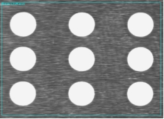
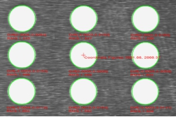
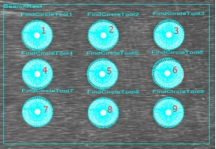

Công cụ này dùng để liên kết (associate) tọa độ ảnh với tọa độ galvo (vibrating mirror) trong một vùng tìm kiếm được chỉ định. Kết quả liên kết được hiển thị như Hình 1.


| Phân loại | Tên tham số | Mô tả tham số |
|---|---|---|
| Cửa sổ thuộc tính | Vùng tìm kiếm | Nhập tọa độ góc trên-trái, chiều rộng và chiều cao của vùng tìm kiếm |
| Phương thức trích xuất | Có 2 cách: Trích xuất thủ công và Trích xuất tự động | |
| Màu Mark | Phân biệt Mark trắng hoặc Mark đen | |
| Có kết hợp pixel khi lượng không | Chọn “Có” → cần nối thêm tham số Pixel khi lượng (mm/px) vào chuỗi dữ liệu để phần mềm kết hợp giá trị này với góc giữa ảnh và galvo nhằm tạo ma trận chuyển đổi chính xác hơn | |
| Độ chính xác hiệu chuẩn | Sau khi hiệu chuẩn xong, phần mềm sẽ dùng kết quả hiệu chuẩn tính ngược lại tọa độ laser lý thuyết của 9 tâm tròn, so sánh với tọa độ thực tế. Nếu sai số tại tâm nào vượt quá ngưỡng này → chữ sai số sẽ hiển thị màu đỏ để cảnh báo (chỉ mang tính nhắc nhở, không ảnh hưởng đến việc công cụ báo thành công) | |
| Cửa sổ hình ảnh | Ảnh đầu vào | Hiển thị ảnh được liên kết với tọa độ galvo |
| Vùng tìm kiếm | Vùng hình chữ nhật trên ảnh dùng để tìm kiếm, đồng bộ với tham số vùng tìm kiếm ở cửa sổ thuộc tính | |
| Chuỗi dữ liệu | Ảnh đầu vào | Ảnh có chiều rộng, chiều cao, kích thước pixel giống với ảnh hiển thị ở cửa sổ hình ảnh |
| Hướng trục X | Hướng trục X của galvo | |
| Hướng trục Y | Hướng trục Y của galvo | |
| Pixel khi lượng đầu vào (mm/px) | Kích thước thực tế tương ứng với 1 pixel (mm/pixel) | |
| Giao diện nâng cao | Phương thức trích xuất | Giống tham số ở cửa sổ thuộc tính |
| Đặc trưng màu | Màu của các điểm phụ trợ (trắng/đen), giống tham số Mark màu | |
| Vị trí điểm đánh dấu | Nhập tọa độ X và Y của 9 điểm galvo (đã biết trước |
| Phân loại | Tên tham số | Mô tả tham số |
|---|---|---|
| Cửa sổ giám sát | Ảnh đầu vào | Ảnh đã xử lý (chiều rộng, chiều cao, kích thước pixel) |
| Pixel khi lượng | Kích thước thực tế tương ứng mỗi pixel (mm/px) | |
| Góc giữa ảnh và galvo | Góc xoay giữa hệ tọa độ ảnh và hệ tọa độ galvo | |
| Ma trận biến đổi tuyến tính 2D | Ma trận chuyển đổi từ tọa độ ảnh ↔ tọa độ galvo | |
| Tọa độ ảnh của điểm đánh dấu | Tọa độ ảnh của điểm trung tâm (điểm thứ 5 trong 9 điểm) | |
| Tọa độ nền tảng của điểm đánh dấu | Tọa độ galvo của điểm trung tâm (điểm thứ 5) | |
| Tọa độ ảnh 9 điểm tròn | Mảng 9 tâm tròn tìm được trên ảnh sau khi liên kết | |
| Tọa độ nền tảng 9 điểm | Mảng 9 tọa độ galvo đã biết (đầu vào) | |
| Kết quả hiệu chuẩn | Toàn bộ thông số hiệu chuẩn (dùng cho các công cụ tính vị trí laser sau này) | |
| Thông tin hiệu chuẩn | Chuỗi thông tin chi tiết về quá trình hiệu chuẩn | |
| Kết quả thực thi | Trạng thái chạy công cụ (OK / NG) | |
| Thời gian thực thi | Thời gian chạy công cụ | |
| Cửa sổ hình ảnh | Ảnh đầu vào | Hiển thị ảnh đã liên kết với galvo (giống ảnh ở cửa sổ giám sát) |
| Kết quả thực thi | Hiển thị OK (xanh) hoặc NG (đỏ), đồng bộ với cửa sổ giám sát | |
| Chuỗi dữ liệu (đầu ra) | Pixel khi lượng | Xuất ra cho các công cụ sau dùng |
| Góc giữa ảnh và galvo | ||
| Ma trận biến đổi tuyến tính 2D | Dùng trực tiếp cho công cụ tính vị trí đánh dấu laser sau này | |
| Tọa độ ảnh điểm đánh dấu | ||
| Tọa độ nền tảng điểm đánh dấu | ||
| Tọa độ ảnh 9 điểm tròn | ||
| Tọa độ nền tảng 9 điểm tròn | ||
| Kết quả hiệu chuẩn | Toàn bộ kết quả hiệu chuẩn (dùng cho các công cụ tính vị trí laser tiếp theo) |
Trích xuất thủ công: Người dùng tự đặt các caliper tìm vòng tròn trong vùng tìm kiếm. Thứ tự đặt caliper phải đúng theo quy tắc như Hình 2 (từ 1 → 9, mỗi caliper tương ứng đúng 1 điểm phụ trợ).
Trích xuất tự động: Phần mềm tự động tìm và xác định tọa độ 9 điểm phụ trợ trong vùng tìm kiếm.

参见“\Samples\九圆关联标定工具.gvp”。